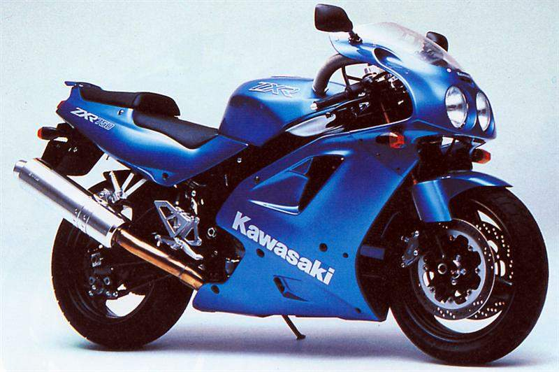
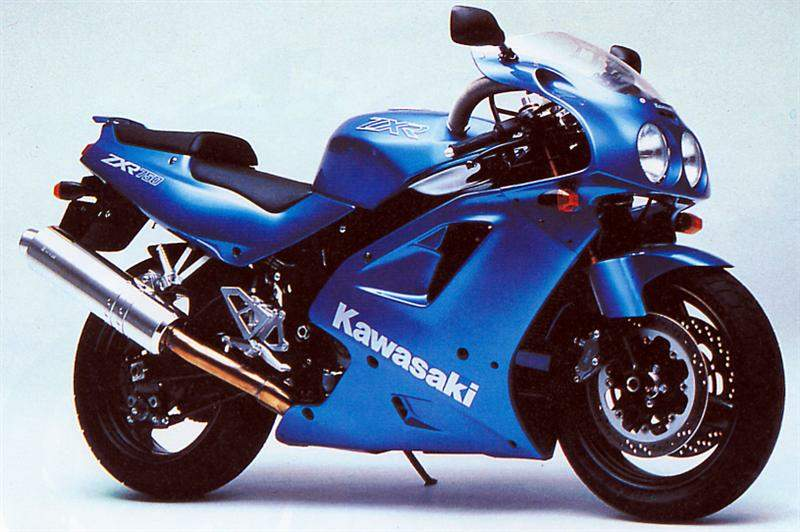

If you weren't in the Fireblade team, then you were definitely the Ninja team, there is no other option. Driveway wars, shouting out: „my, my, my is the best and (a few indecent words)”. The Prymus was riding Ninja in "Młode Wilki"(Polish action movie). How many young minds imagined that he was delivering mafia parcels with a beautiful girl behind him. Well, Ninja was sexy and fast. ZX7R is also a great racer who has been in sport for a long time. It also had a large episode in Endurance races. It is a representative of the extinct 750cc sports genre. Has one more feature – this motorcycle is huge. With modern sports motorcycles, it looks like an eight-year student in a lesson in fifth grade. ZX-7R does not look like a guy who will make your task easier, on the contrary, it's son of the gun and the quintessence of the 90s in sport. Today, we can make friends with him for little money. Unfortunately, a lot of these machines were driven to their deaths, or converted into streetfighters.

 

Why classic? As above. We sighed at such machines for years, today we can have them in garage. Only the mafia do not want to give orders, but maybe that's good.